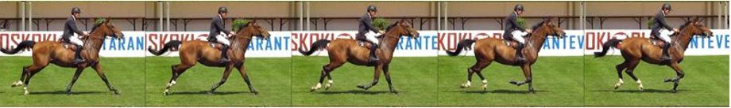

Levende bilete
Video og animasjon er mange stillbilete etter kvarandre, gjerne visast det mellom 50 og 120 bilder per sekund.
Kor stor plass ein ukomprimert video krev i ein datamaskin blir oppgitt i anntall byte.
Komprimering av bilete
Ein kan benytte mykje av dei same prinsippa for kompresjon av video som me brukar for kompresjon av vanlege stillbilete.
Som med vanlege bilete, kan me bruke RLE for kvart bilete i ein video.
Ein kan også bruke JPG komprimering for video.
Sidan mange bilder i ein video er veldig like, tar ein berre med forskjellane når ein komprimerar.